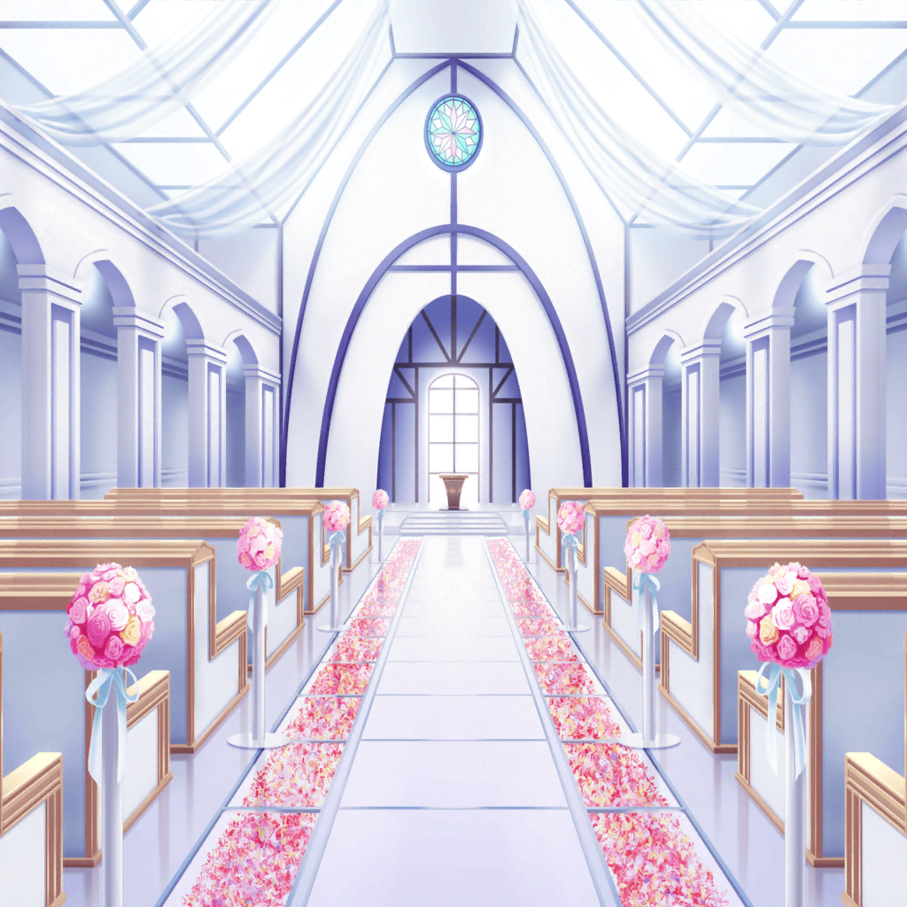

結婚式場
沙綾
おはようございます。
今日はよろしくお願いしま……
薫
おや？ 沙綾ちゃんじゃないか
沙綾
薫……さん……？
えっ、薫さんがどうしてここに……！？
薫
なあに、簡単な話だよ。
美しさという罪が招いた運命がきっかけさ
薫
まさかその運命の先に君がいたとは……
なんと……こう……儚いのだろう……
沙綾
えっと……
沙綾
（どうしよう、全く意味がわからない……！）
カメラマン
お待たせ。あなた達が今日のモデルさんね
商店街の人
沙綾ちゃん、それに薫ちゃん。
今日は本当にありがとう
沙綾
え？ 薫さんもモデルを……！？
商店街の人
沙綾ちゃんにお願いした後、
新郎役のモデルさんも急にキャンセルしてきて……
それで、ちょうど通りかかった薫ちゃんにお願いしたの
商店街の人
前にポスターで薫ちゃんを見たんだけど、
新郎役にピッタリだと思って
沙綾
ええーっ！？
しかも、新郎役……！？
薫
ああ。
こうして私達が出会うのは必然であり運命だったってわけさ
沙綾
ちょっとビックリですけど、
知らない人じゃなくてよかったあ……薫さん、
よろしくお願いします
薫
こちらこそ、よろしく
商店街の人
それじゃあ、衣装の用意はできているから着替えてきて
沙綾
わかりました
薫
私も着替えに行くとしよう。
君の心を魅了する姿に……ね

１時間後
結婚式場 場内
沙綾
（ドレスなんて初めて着たから……なんだか、緊張する）
沙綾
あの、着替え終わりまし――
香澄
わあっ……！ さーや、キレイ！
おーい、こっちこっちー！
沙綾
香澄！？ なんでここに……
有咲
香澄だけじゃねーぞ
りみ
ごめんね、驚かせちゃって
沙綾
有咲にりみりん、それにおたえも……
みんな、どうしてここに？
たえ
りみから聞いた。
沙綾が新婦役のモデルをやるって
香澄
さーやが心配で、様子を見に来たんだよ～！
沙綾
そうだったんだ……
香澄
それにしても……
さーや、そのドレス、すっごくすっごく似合ってるよ！
有咲
うん。いい感じじゃん
たえ
沙綾のイメージに合ってる
りみ
沙綾ちゃん、本物の新婦さんみたいだよ。
そのドレス、沙綾ちゃんにピッタリだね
沙綾
えへへ……ちょっと照れくさいね？
沙綾
けど、みんなが来てくれたおかげで
ちょっとリラックスできたよ。ありがとね
香澄
それで、新郎役の人は？
沙綾
ふふふ。新郎役はみんなも知ってる人だよ
りみ
私達が知ってる人……？
薫
おや？ お姫様が増えたね
香澄
……えええええっ！？
新郎役が、薫さんなの！？
有咲
すげぇ、怖いくらい似合ってるな……
たえ
うん。かっこいいね
りみ
…………！
たえ
りみ？ どうしたの？
りみ
…………
沙綾
固まっちゃってる……？
香澄
お～い、りみりん？ 起きてる～？
りみ
め、めっちゃかっこいい……！
薫
ありがとう、可憐な子猫ちゃん
りみ
か、可憐……！？ こ、子猫……っ！？
私が……！？
薫
ああ、そうさ。
可憐な子猫ちゃんとは君のことだよ
りみ
あ、あの、あ、ああ、あのっ！
わ、私は、その…………
薫
おやおや、頬がりんごのように真っ赤だ。
食べてしまいたいくらい、可愛いね
りみ
た、食べ……！？
有咲
あー……りみのやつ、大丈夫か？
たえ
ダメかも……？
香澄
りみり～ん！ しっかりして～！
頭から湯気が出てるよー！！